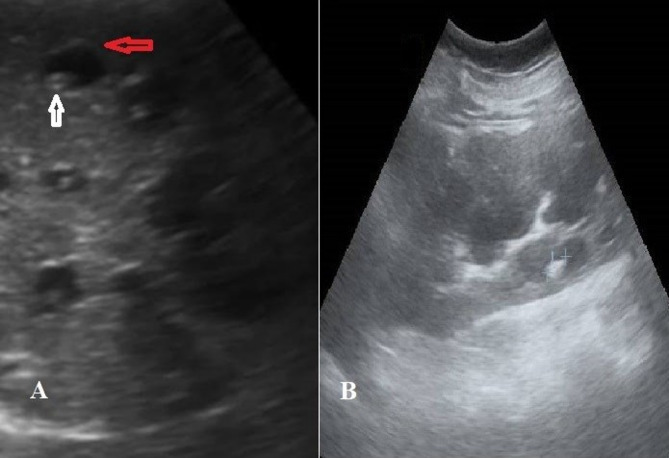
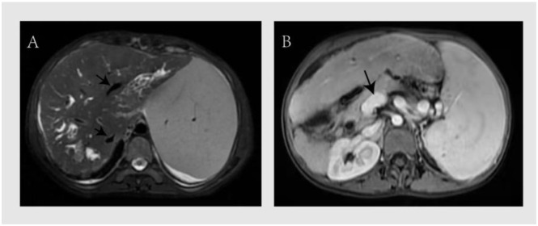
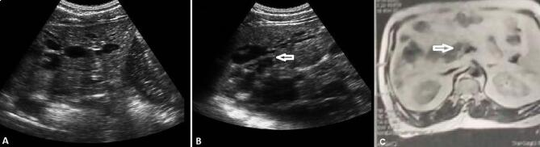
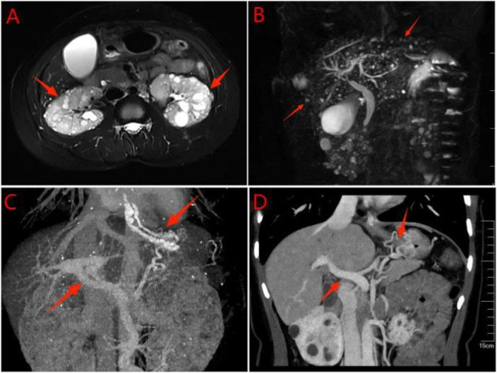

166 — Tăng áp lực cửa trong xơ hóa gan bẩm sinh (CHF) & bệnh Caroli: phân độ CSLD/CiSLD, tầm soát giãn tĩnh mạch, chỉ định ghép gan
Tags: pattern:xo-quanh-ong-mat vung:gan score:CSLD-CiSLD protocol:MRCP incidentaloma:nang-gan
Mức chắc chắn (certainty): tổng hợp y văn (literature synthesis) — nhóm tự biên từ y văn mở (Front Pediatr 2026, Sci Rep 2026, SAGE Open Med Case Rep 2026, Front Gastroenterol 2026, Orphanet J Rare Dis 2025) và đối chiếu Baveno VII; không gắn một ca nguyên văn duy nhất.
1. Tổng quan bệnh học – cơ chế hình ảnh
- Xơ hóa gan bẩm sinh (congenital hepatic fibrosis — CHF) là bệnh phát triển đường mật hiếm, di truyền lặn NST thường, ước tính 1/10.000–1/20.000; y văn mới chỉ ghi nhận vài trăm ca, nên chẩn đoán muộn là quy luật (PMC13581711). Tổn thương nằm ở đường mật nhỏ (đường mật trong gan) với bộ ba mô học: xơ hóa khoảng cửa lan rộng, tăng sinh ống mật bất thường, kiến trúc tiểu thùy gan còn nguyên (không có pseudolobule như xơ gan).
- Hệ quả huyết động: xơ hóa khoảng cửa làm tăng sức cản trước xoang (presinusoidal) → tăng áp lực cửa trong khi chức năng tổng hợp gan còn tốt trong nhiều năm. Vì vậy bệnh nhân thường đến vì xuất huyết tiêu hóa do giãn tĩnh mạch, không phải vàng da/suy gan: 45,8% bệnh nhân CHF khởi đầu bằng xuất huyết tiêu hóa trên, 69,6% người lớn có lách to, và 45,8% có ít nhất một đợt viêm đường mật tích lũy (PMC13581711).
- Bệnh Caroli (Caroli disease — CD) là giãn dạng túi, từng đoạn, không do tắc nghẽn của đường mật trong gan, thông với cây đường mật; dấu chấm trung tâm (central dot sign) là nhánh tĩnh mạch cửa bị bao quanh bởi túi mật giãn, thấy rõ trên siêu âm và MRCP (PMC13031803). Hội chứng Caroli (Caroli syndrome — CS) = Caroli + CHF/tăng áp lực cửa, thường kèm bệnh nang thận (ARPKD hoặc ADPKD).
- Tiên lượng và biến chứng: trong một đoàn hệ 19 bệnh nhân, CS có trung vị sống 45 tháng so với 59 tháng ở CD (p = 0,020); toàn bộ ca giãn tĩnh mạch thực quản, mất bù gan, ung thư đường mật trong gan (intrahepatic cholangiocarcinoma — iCCA) và tử vong đều nằm trong nhóm CS; 3/12 ca CS (25%) có iCCA (PMC13031803). Nguy cơ iCCA ở Caroli được báo cáo tăng tới ~100 lần so với dân số chung (PMC12492817).
- Ghép gan: 20 ca CS ghép gan có tỷ lệ sống 1/3/5 năm = 90%/85%/78,5%, theo dõi trung vị 74,6 tháng; chỉ định chủ yếu là xơ gan mất bù/biến chứng tăng áp lực cửa, một số ca viêm đường mật kháng trị (PMC12492817).
- TẠI SAO đọc được trên hình ảnh (vật lý + mô bệnh):
- Siêu âm: gan to, tăng âm lan tỏa, dải xơ quanh cửa (periportal fibrotic bands), lách to, giãn tĩnh mạch cửa; Caroli có túi dịch thông với đường mật và chấm trung tâm.
- CT: gan to, bờ gan biến dạng, giãn đường mật trong gan, lách to, tuần hoàn bàng hệ; Caroli có giãn dạng túi và có thể thấy sỏi trong gan hoặc iCCA.
- MRI/MRCP: chuẩn không xâm lấn để chứng minh sự thông thương với cây đường mật; Caroli cho hình “phễu”/túi từng đoạn, phân biệt với nang không thông (bệnh gan đa nang, u mô đệm đường mật von Meyenburg).
- Đàn hồi gan (transient elastography): LSM > 15 kPa được dùng làm tiêu chí bệnh gan có ý nghĩa lâm sàng (CSLD) trong phân độ đề xuất cho ARPKD (PMC13398733); tuy nhiên LSM cao cũng phản ánh ứ máu/xơ, không đồng nghĩa xơ gan.
- HVPG: đo qua xoang gan nên thường bình thường trong tăng áp lực cửa trước xoang; chỉ tới 30% ca (đặc biệt có thành phần xoang/nốt tái tạo) có HVPG > 10 mmHg — không dùng HVPG bình thường để loại trừ tăng áp lực cửa (PMC13566686).
Phân độ CSLD / CiSLD (đề xuất cho bệnh gan trong ARPKD, 2026)
- CSLD — bệnh gan có ý nghĩa lâm sàng (clinically significant liver disease): chỉ cần MỘT trong ba tiêu chí: (1) giãn tĩnh mạch thực quản cần can thiệp VÀ tiểu cầu < 150 × 10⁹/L**; (2) **≥ 1 đợt viêm đường mật**; (3) **LSM > 15 kPa.
- CiSLD — bệnh gan không có ý nghĩa lâm sàng (clinically insignificant liver disease): phải có TẤT CẢ: (1) giãn tĩnh mạch không cần can thiệp; (2) tiểu cầu ≥ 150 × 10⁹/L; (3) không có đợt viêm đường mật; (4) LSM ≤ 15 kPa (PMC13398733).
- Đây là phân độ đề xuất, đang được validate, không phải tiêu chuẩn quốc tế bắt buộc; dùng để chuẩn hóa báo cáo và phân tầng theo dõi.
2. Mẫu hình + chẩn đoán phân biệt theo vị trí (gamut)
- Mẫu hình 1 — tăng áp lực cửa nhưng chức năng gan còn tốt: CHF, hội chứng Caroli, bệnh mạch xoang cửa (porto-sinusoidal vascular disorder — PSVD), sán máng, huyết khối tĩnh mạch cửa, tắc tĩnh mạch lách; phân biệt với xơ gan (men gan/bilirubin bất thường rõ, pseudolobule).
- Mẫu hình 2 — nhiều “nang” gan: bệnh gan đa nang (polycystic liver disease — PLD, nang không thông đường mật), u mô đệm đường mật von Meyenburg (biliary hamartoma, nốt < 1,5 cm, “starry sky”, không thông), Caroli (túi thông đường mật + central dot), nang sán, nang ống mật chủ (extrahepatic).
- Mẫu hình 3 — giãn đường mật trong gan: Caroli, viêm đường mật mủ tái phát (recurrent pyogenic cholangitis — RPC), xơ gan mật nguyên phát (PSC), u nhầy nhú nội ống mật (IPNB), iCCA, hẹp lành tính sau can thiệp.
- Mẫu hình 4 — lách to + giảm tiểu cầu: tăng áp lực cửa, bệnh lý tủy xương, lymphoma, nhiễm trùng mạn; ở CHF, lách to thường kèm giãn tĩnh mạch dạ dày–thực quản và tuần hoàn bàng hệ.
- Mnemonic “FIBRO–CYST–DUCT”: FIBRO (xơ khoảng cửa), CYST (nang/PLD/von Meyenburg), DUCT (giãn đường mật Caroli/IPNB/CCA).
3. Bảng so sánh phân biệt (ma trận đối chiếu)
| Thực thể (entity) | Hình ảnh điển hình (US/CT/MRI) | Chốt vào (rule-in) | Chốt loại (rule-out) | Gợi ý xác nhận |
|---|---|---|---|---|
| CHF | Gan to, tăng âm, dải xơ quanh cửa; lách to, giãn tĩnh mạch cửa; không có túi mật giãn lớn | Xơ khoảng cửa + ống mật bất thường + kiến trúc tiểu thùy còn nguyên trên mô học; tăng áp lực cửa không tương xứng với chức năng gan | Pseudolobule/xơ gan lan tỏa → nghĩ xơ gan; nang lớn không thông → PLD | Sinh thiết gan + gen PKHD1; MRCP; đo LSM |
| Caroli disease (CD) | Giãn dạng túi từng đoạn, thông với cây đường mật, central dot sign; có thể sỏi trong gan | Túi mật giãn thông đường mật + central dot trên US/MRCP | Nang không thông → PLD/von Meyenburg; giãn do tắc → RPC/hẹp | MRCP là chuẩn; CT tĩnh mạch cửa; theo dõi iCCA |
| Caroli syndrome (CS) | Caroli + lách to, giãn tĩnh mạch, tuần hoàn bàng hệ, gan biến dạng | Caroli + bằng chứng tăng áp lực cửa (varices, collaterals, lách to) | Caroli đơn thuần không có tăng áp lực cửa → CD | Nội soi tiêu hóa; MRCP; đo LSM; đánh giá ghép |
| PLD | Nhiều nang gan không thông đường mật, kích thước lớn, thận đa nang kèm | ≥ 10 nang gan + nang thận (ADPKD); nang không thông | Túi thông đường mật + central dot → Caroli | MRI/MRCP; xem bài 123/157 |
| Von Meyenburg (biliary hamartoma) | Nốt < 1,5 cm, T2 “starry sky”, không thông đường mật, rải rác | Nhiều nốt nhỏ T2 sáng, không thông mật, không ngấm | Túi lớn thông mật → Caroli; nang lớn → PLD | MRI/MRCP; sinh thiết nếu không điển hình |
| PSVD / tăng áp lực cửa không xơ gan | Gan bình thường/loang lổ, lách to, collaterals; không có xơ gan | Tăng áp lực cửa + sinh thiết không xơ gan + loại trừ nguyên nhân khác | Xơ gan (pseudolobule, men gan bất thường) | Sinh thiết; loại trừ huyết khối, sán máng, bệnh máu |
| Cirrhosis | Gan co nhỏ, bờ gồ ghề, pseudolobule, dịch báng, varices | Pseudolobule + xơ cầu trên mô học; Child-Pugh/MELD tiến triển | Kiến trúc tiểu thùy còn nguyên → nghĩ CHF | Sinh thiết; đàn hồi; loại trừ virus/rượu |

Siêu âm: túi giãn đường mật (mũi tên trắng) chứa central dot (nhánh tĩnh mạch cửa), xung quanh là các nhánh đường mật giãn (mũi tên đỏ); thận có nhiều nang. Nguồn: Hanafy AS et al., Sci Rep 2026 (PMC13031803), CC BY 4.0.4. Protocol chụp + phân độ + hướng xử trí
- Siêu âm bụng + Doppler cửa: bước đầu tiên; đo gan, lách, đường kính tĩnh mạch cửa, vận tốc/chiều dòng chảy, dịch báng, collaterals. Ở trẻ, siêu âm là tuyến đầu vì không xạ.
- MRI/MRCP gan–mật: T2 3D MRCP + DWI + chuỗi động sau tiêm; mục tiêu là chứng minh thông thương túi–đường mật, tìm central dot, sỏi, hẹp, và iCCA. MRCP là chuẩn không xâm lấn cho Caroli (PMC13031803).
- CT bụng có cản quang: thì tĩnh mạch cửa để đánh giá tuần hoàn bàng hệ, varices, lách, huyết khối cửa, và can thiệp (TIPS/TAE) khi cần.
- Đàn hồi gan (LSM): > 15 kPa = CSLD theo phân độ đề xuất; nhưng LSM cao có thể do ứ máu (bệnh Caroli có tăng áp lực cửa) — đọc cùng lách to, varices, tiểu cầu, không đọc đơn độc.
- Nội soi tiêu hóa (UGIE): nội soi chỉ điểm ngay khi chẩn đoán; Baveno VII: không giãn/giãn nhỏ F1 → theo dõi; F2/F3 → chẹn beta không chọn lọc (propranolol/carvedilol) hoặc EVL; xuất huyết cấp → hồi sức + kháng sinh dự phòng + terlipressin + EVL trong 12 giờ; dự phòng tái phát = NSBB + EVL (PMC13581711).
- Xét nghiệm: công thức máu (tiểu cầu < 150 × 10⁹/L), bilirubin, albumin, INR, creatinine, CA 19-9; cấy máu khi sốt.
- Viêm đường mật: kháng sinh theo Tokyo Guidelines 2018, bao phủ Gram âm + kỵ khí; dẫn lưu đường mật khi có tắc/áp-xe; một số ca viêm đường mật không có hẹp thực thể vẫn tái diễn do ứ mật (PMC13581711).
- Tầm soát iCCA: MRI/MRCP định kỳ + CA 19-9; không bỏ sót khối/túi mới, thành dày, tắc mật tiến triển — nguy cơ tăng tới ~100 lần (PMC12492817).
- Chỉ định ghép gan: biến chứng tăng áp lực cửa kháng trị (xuất huyết tái diễn, báng khó điều trị), viêm đường mật tái diễn, suy gan thứ phát, nghi iCCA, hội chứng gan–phổi; khi CHF + ARPKD giai đoạn cuối → ghép gan–thận đồng thời; có thể ghép gan trước, ghép thận sau (PMC13581711).
- Lưu ý MELD/Child-Pugh: bệnh nhân có thể Child-Pugh A, MELD 9,9 nhưng vẫn có LSM 49,4 kPa và giãn tĩnh mạch độ III/tái xuất huyết — đánh giá ghép phải dựa trên biến chứng tăng áp lực cửa + viêm đường mật + chất lượng sống, không chỉ điểm số gan (PMC13356321).
flowchart TD
A[Nghi xo gan bam sinh hoac benh Caroli] --> B[SA bung + Doppler cua + xet nghiem]
B --> C[MRI/MRCP: thong thuong tui - duong mat, central dot]
C --> D{Co tieu chi CSLD?}
D -->|Khong| E[CiSLD: theo doi dinh ky, noi soi khi co chi dinh]
D -->|Co| F[Noi soi tieu hoa danh gia varices]
F --> G{Varices F2/F3 hoac da xuat huyet?}
G -->|Co| H[NSBB hoac EVL; du phong tai phat]
G -->|Khong| I[Theo doi sat: tiểu cầu, lách, LSM]
H --> J{Con bien chung khang tri?}
J -->|Co| K[Danh gia ghep gan; ghep gan-than neu ARPKD]
J -->|Khong| I
C --> L{Co viem duong mat hoac nghi iCCA?}
L -->|Co| M[Kháng sinh + dan luu; MRI/MRCP + CA19-9; sinh thiet]
5. Biến thể bình thường và cạm bẫy
- HVPG bình thường không loại trừ tăng áp lực cửa: CHF là trước xoang, HVPG đo qua xoang nên thường thấp; chỉ ~30% ca có HVPG > 10 mmHg. Đừng vì HVPG 6–8 mmHg mà bỏ nội soi (PMC13566686).
- Chức năng gan tốt không có nghĩa bệnh nhẹ: bilirubin/albumin/INR có thể bình thường trong nhiều năm; xuất huyết tiêu hóa là biểu hiện đầu tiên ở 45,8%. Chỉ số MELD thấp không được trì hoãn đánh giá ghép (PMC13581711, PMC13356321).
- LSM cao do ứ máu, không chỉ xơ: trong Caroli/CHF có tăng áp lực cửa, đàn hồi gan có thể rất cao (49,4 kPa) dù Child-Pugh A; đọc cùng lách, varices, tiểu cầu.
- CHF không phải xơ gan: mô học có xơ khoảng cửa + ống mật bất thường nhưng kiến trúc tiểu thùy còn nguyên, không pseudolobule; đừng chẩn đoán “xơ gan do virus/rượu” khi chưa loại trừ.
- Caroli vs PLD/von Meyenburg: điểm quyết định là có thông với cây đường mật và central dot; nang PLD/von Meyenburg không thông. MRCP là chìa khóa, không dựa vào “nhiều nang”.
- Viêm đường mật có thể không do hẹp: ứ mật do dị dạng ống mật gây viêm tái diễn không có chỗ hẹp thấy được; đừng chờ “phải có sỏi/hẹp” mới điều trị.
- Central dot sign: rất gợi ý nhưng không tuyệt đối; có thể gặp ở giãn đường mật do nguyên nhân khác, nên luôn đối chiếu MRCP và bối cảnh.
- Sau cắt lách: nguy cơ nhiễm khuẩn bao vây và huyết khối tĩnh mạch cửa; cần tiêm phòng, theo dõi. Nút mạch lách bán phần (PSE) là lựa chọn giữ chức năng miễn dịch nhưng có thể gây sốt/đau/tràn dịch màng phổi (PMC13581711).
- Ghép gan không chỉ vì “xơ gan”: chỉ định gồm viêm đường mật tái diễn, nghi iCCA, hội chứng gan–phổi, ngay cả khi chức năng gan còn tương đối tốt.
6. Tự lượng giá — Blind Quiz
Ca 1 — Bệnh nhân nữ trưởng thành, đau hạ sườn phải tái diễn. Siêu âm bụng có nhiều “nang” gan. Nhìn ảnh, mô tả trước.
- Gợi ý: không vàng da; xét nghiệm gan nhẹ; thận có nang hai bên.
- Hỏi: “nang” có thông với đường mật không? Dấu chấm trung tâm là gì? Cần chụp gì tiếp?
Bấm để hiện đáp án (findings + chẩn đoán)
- Dấu hiệu: túi giãn đường mật trong gan, bên trong có chấm trung tâm (nhánh tĩnh mạch cửa); xung quanh là các nhánh mật giãn; thận nhiều nang.
- Chẩn đoán: bệnh Caroli — giãn dạng túi từng đoạn, thông với cây đường mật; central dot là dấu hiệu đặc hiệu.
- Bước tiếp: MRCP để xác nhận thông thương, tìm sỏi/hẹp và tầm soát iCCA; nội soi tiêu hóa nếu có tăng áp lực cửa.
- Nguồn ảnh: Hanafy AS et al., Sci Rep 2026 (PMC13031803), CC BY 4.0.
Ca 2 — Nữ 29 tuổi, Caroli đã biết, nôn máu, lách to, tiểu cầu giảm, bilirubin bình thường. MRI bụng.

- Gợi ý: Child-Pugh A, MELD thấp; đã dùng propranolol nhưng còn tái xuất huyết.
- Hỏi: vì sao MELD thấp mà bệnh nặng? Phân độ CSLD/CiSLD? Khi nào gửi ghép?
Bấm để hiện đáp án (findings + chẩn đoán)
- Dấu hiệu: (A) nhiều nhánh đường mật trong gan giãn; (B) tĩnh mạch cửa giãn; lách to, varices trên nội soi.
- Chẩn đoán: hội chứng Caroli có tăng áp lực cửa. Với tiểu cầu < 150 × 10⁹/L + varices cần can thiệp, bệnh nhân đạt CSLD (chỉ cần một tiêu chí).
- Vì sao MELD thấp: chức năng tổng hợp gan còn tốt; biến chứng tăng áp lực cửa mới quyết định tiên lượng. Gửi đánh giá ghép gan khi xuất huyết tái diễn/kháng trị, báng khó điều trị, viêm đường mật tái diễn hoặc nghi iCCA.
- Tầm soát iCCA bằng MRI/MRCP + CA 19-9; nguy cơ tăng tới ~100 lần.

- Nguồn ảnh: Meng H et al., SAGE Open Med Case Rep 2026 (PMC13356321), CC BY-NC 4.0; Hanafy AS et al., Sci Rep 2026 (PMC13031803), CC BY 4.0.
Ca 3 — Nữ 31 tuổi, xuất huyết tiêu hóa trên, mẹ có bệnh thận đa nang. MRI cho thấy thận nhiều nang và gan có nhiều nốt nhỏ.

- Gợi ý: MRCP không thấy các nốt thông với đường mật; tĩnh mạch cửa 17,5 mm, varices.
- Hỏi: các nốt gan là gì? Có phải Caroli không? Chẩn đoán hợp nhất?
Bấm để hiện đáp án (findings + chẩn đoán)
- Dấu hiệu: (A) thận hai bên nhiều nang; (B) nhiều nốt gan T2 sáng không thông đường mật, dạng “starry sky”; (C–D) tĩnh mạch cửa giãn ~17,5 mm + varices.
- Chẩn đoán: CHF + u mô đệm đường mật von Meyenburg + ADPKD (thể kết hợp do PKD1); không phải Caroli vì nốt không thông mật.
- Xử trí: điều trị tăng áp lực cửa (NSBB/EVL), tầm soát iCCA, đánh giá ghép gan–thận nếu suy cả gan và thận.
- Nguồn ảnh: Ren X et al., Front Gastroenterol (Lausanne) 2026 (PMC13447153), CC BY 4.0.
Bài liên quan chéo
- 157 – Bệnh thận đa nang ADPKD/ARPKD & gan đa nang
- 123 – Nang gan & bệnh gan đa nang (PLD, Caroli) vs nang đường mật
- 126 – Đo thể tích gan & điều trị nội khoa PLD
- 132 – Hẹp đường mật không xác định & cholangioscopy
- 176 – TIPS/DIPS: chỉ định, kỹ thuật & theo dõi shunt
- 127 – Gan tim & tăng áp lực cửa trước xoang
Không dùng để chẩn đoán độc lập khi chưa có người hướng dẫn.